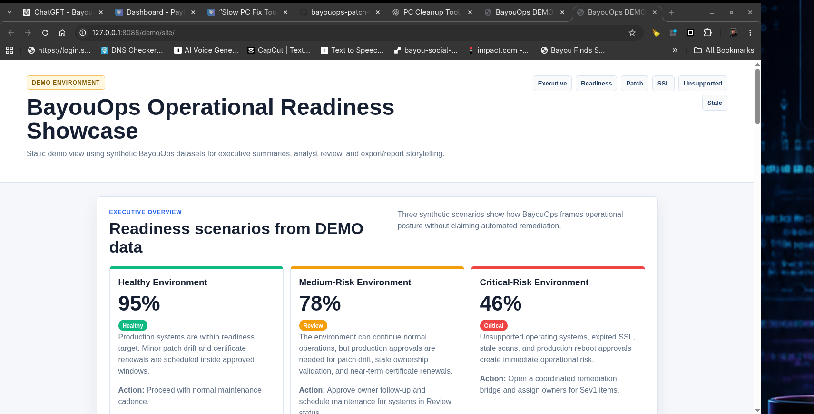
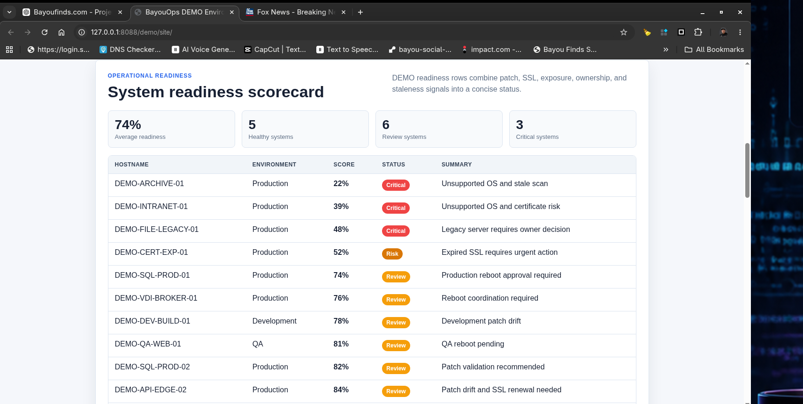
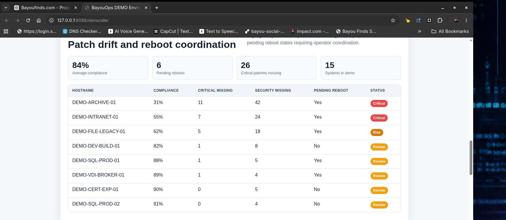

BayouFinds Software
BayouOps Suite Pro
Windows & Linux Audit Toolkit
Operational visibility without enterprise bloat.
BayouFinds Software
Operational visibility without enterprise bloat.
BayouOps Suite Pro focuses on practical operational readiness: patch visibility, infrastructure reporting, audit support, and exportable proof without turning into another oversized enterprise dashboard.

Executive readiness visibility and operational summaries.

Critical-risk visibility for unsupported systems and operational exposure.

Patch readiness and operational compliance workflows.
BayouOps Suite Pro is currently being prepared as an early operator/developer preview for small IT teams, sysadmins, infrastructure operators, and homelab users who want practical Windows and Linux audit visibility without enterprise bloat.
Early access is intended for feedback, testing, workflow validation, and practical operational use cases. It is actively evolving.
Request Early Access Purchase via Payhip